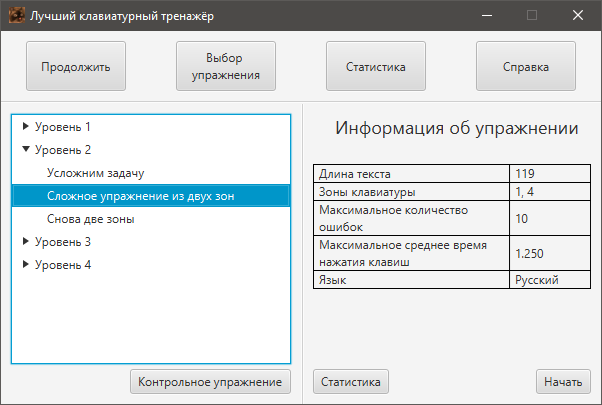

Если вы выберете пункт меню "Выбрать Упражнение", то вы увидите следующее окно. Разберём из чего оно состоит и какие действия Вы моете совершить:

Как выбрать упражнение и уровень сложности?
Слева Вы увидете "дерево" упражнений. Они разбиты по уровням. Каждый следующий уровень включает всё больше зон и, тем самым, все упражнения в него входщие становятся сложнее.
Как перейти к контрольному тесту и какова его цель?
Под деревом упражнений расположена кнопка "контрольный тест". Она и запустит упражнение, которое выяснит Ваш текущий уровень и даст иные полезные рекомендации.
Где узнать информацию об упражнении или просмотреть статистику по нему?
Как только Вы выберете какое-либо упражнение, справа появится информация по нему. Например, количество допустимых ошибок или максимальное среднее время нажатия. Если же Вы уже проходили это упражнение и хотите узнать текущий прогресс по нему, то Вы можете нажать на кнопку "Статистика" под данной областью.
Как начать прохождение упражнения?
Как только Вы выберете нужное Вам упражнение, под областью, где описываются параметры данного упражнения, появится кнопка "Начать. Нажав её, Вы и перейдёте к прохождению упражнения.